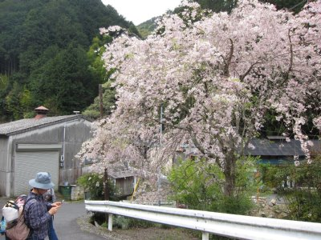
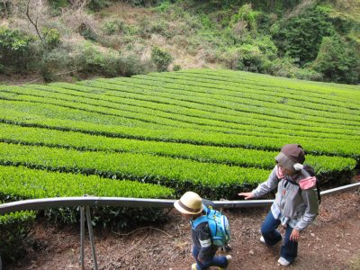
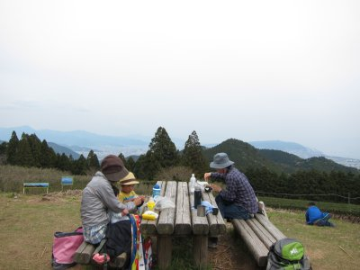
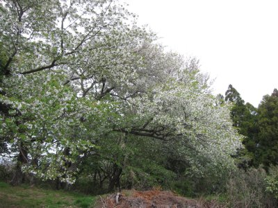

春の満観峰ハイキング | 2014年4月 幹事：べっしー |
|---|---|
| ふもとの枝垂桜が見たくて、この時期になると満観峰に登りたくなります。 今年の参加者は、波平さんと大和なでしこさんと子供のまことくん、さとしくんと私の5名です。 さとしくんはおんぶされての参加ですが、4才半のまこと君は自力で登ります。 10時に宇津ノ谷峠道の駅を出発。逆川を眺め、ウグイスの鳴き声を聞きながらテクテクと歩いていきます。 逆川集落の枝垂桜。まだ咲いてました。 最近急に暖かくなり、桜が一気に開花し始めていたので、もう散っているんじゃないかと心配していましたが、葉っぱが出始めているものの、まだまだ綺麗に咲いてます。 いつもながら上にある電線がイマイチですが、ここの桜は綺麗ですね。 また、この逆川集落も渋くて良い感じです。下見板の外壁が残る家々。庭を綺麗に手入れされている家も多く、花が咲き乱れています。騒音もなく静かです。縁側でお茶飲んで一服したいですね。 | |
 逆川集落の桜 ちょっと葉っぱ出てる |  これ1本だけだけど、綺麗だよね |
| 集落から畑を抜けてハイキングコースに入ります。 満観峰は私有地が多く、ハイキングコースも私有地を通らせて頂いてます。だからゴミ捨てとか畑に入るとかもってのほか。（一般常識ですが）騒がず静かに通りましょう。 元気なまこと君、山道になってもグイグイ進みます。お母さんの方がおんぶしている分大変そうです。 途中にある散りかけた山桜や、新芽の茶畑も春を感じられて気持ちがいいです。 山頂付近の竹林にくると、無残に掘り返された跡がところどころにあります。タケノコを取りにきたのでしょうか。イノシシかと思いましたが、皮が捨てられているので人間でしょう。 放置され剪定されていない茶畑が見えてきたら山頂に到着です。約2時間半掛かりました。ゆっくり登りましたからね。 | |
 集落を抜けるとこんな感じの森です |  途中に茶畑もあります |
| 春霞で遠くの眺望はイマイチと思いきや、富士山がうっすらと見えました。伊豆半島もうっすらと確認できます。やはり山頂は展望がよくて気持ちいいですね。人もたくさん来てます。 ちょうど空いたテーブルで昼食にします。私は手製おにぎりです。おにぎり部ですから。 食後にコーヒーを淹れてどら焼きも頂きます。疲れた体に甘いお菓子が心地いいです。 1時間ほどのんびりして、周囲に人がいなくなった頃下山開始。 下りが怖いのか、まこと君の歩みがゆっくりとなります。登りはグイグイきた段差も、恐々降りていきます。途中何度か転びながらも、無事に下山しました。 冬の間サボっていた筋肉も、この企画のたびに呼びさまされる気がします。やはり、シーズンインは満観峰でしょう。今回は、サボっている大人が大変な山を、4才半のまこと君が頑張って登ったことに驚きました。小さな足で頑張ったね〜 大人もがんばりましょう！（笑 | |
|  山頂でおにぎり。ちょ〜〜と富士山が見える |  山頂の桜は葉桜だ！ |
| 写真＆コメント ｂｙ べっしー | |